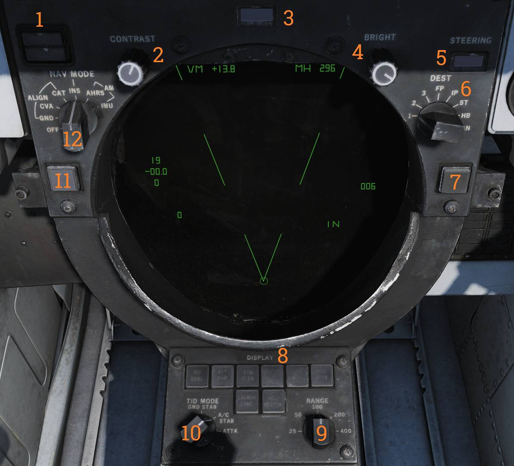

Center Console
Tactical Information Display (TID)

The Tactical Information Display (TID) presents tactical, navigation, and data link information to the RIO and provides associated navigation and display controls.
INS Status Indicator
The INS status indicator (
- STBY — Power applied but alignment not complete.
- READY — Minimum alignment sufficient for AIM-54 launch criteria.
Both lights extinguish when an INS mode is selected. The indicator may also display fault conditions.
Contrast Knob
The CONTRAST knob (
Data Readout Drum
The DATA READOUT drum (
The drum may be blank for sources that do not generate textual data.
Brightness Knob
The BRIGHT knob (
Steering Indicator Drum
The STEERING indicator drum (
Destination Selector
The DEST selector (
Collision Steering Button
The CLSN button (
Display Selection Buttons
The DISPLAY buttons (
Each button includes an indicator light showing current selection state.
Available display selections include:
- RID DISABLE — Not implemented.
- ALT NUM — Toggles altitude numerics next to track symbols.
- SYM ELEM — Toggles supplementary track symbology. When deselected, only the track symbol dot is displayed.
- DATA LINK — Toggles display of all data link tracks.
- JAM STROBE — Toggles display of jamming strobes.
- NON-ATTK — Toggles display of non-attackable tracks.
- VEL VECTOR — Toggles display of velocity vectors.
- LAUNCH ZONE — Toggles missile launch zone display. Replaces velocity vectors when applicable. Automatically enabled by the WCS 60 seconds prior to maximum missile launch range.
Range Selector
The RANGE selector (
The selected range corresponds to the diameter distance represented on the display.
TID Mode Selector
The TID MODE selector (
Track Hold Button
The TRACK HOLD button (
When selected, track retention time is increased to two minutes. Normal retention time is approximately 14 seconds.
Navigation Mode Selector
The NAV MODE selector (
Hand Control Unit (HCU)

The hand control unit is the primary control stick for radar and TCS operation.
IR/TV Switch
The IR/TV switch (
- OFF/STBY — Applies power without full operation.
- ON — Enables full TCS operation.
IR/TV Overtemperature Indicator
The IR/TV overtemp indicator (
Light Test Button
The LIGHT TEST button (
Power Reset Indicator
The PWR RESET indicator (
Power Reset Button
The PWR RESET button (
If the fault condition persists, affected supplies will remain inoperative.
WCS Status Indicator
The WCS indicator (
- STBY or XMT selected while radar warmup is incomplete.
- XMT selected while radar transmission remains inhibited.
WCS Power Switch
The WCS switch (
- STBY — Applies power to WCS and begins radar warmup without transmission.
- XMT — Enables radar transmission when warmup is complete.
Display warmup time is approximately 30 seconds. Radar warmup time is approximately three minutes.
Manual Rapid Lockon Button
The MRL button (
This mode overrides all other radar operating modes except PLM and VSL.
Offset Button
The OFFSET button (
Antenna Elevation Thumbwheel
The ELEV thumbwheel (
HCU Trigger
The HCU trigger (
- First detent — HALF ACTION.
- Second detent — FULL ACTION.
Functions include target acquisition and symbol hook.
Hand Control Function Buttons
The hand control function buttons (
The buttons are mutually exclusive and light up when selected.
Available functions are:
- IR/TV — Controls TCS azimuth, elevation, and tracking. Enables display of TCS elevation on the right elevation indicator on the DDD.
- RDR — Controls radar antenna elevation and STT acquisition or return to search. Displays commanded radar antenna elevation on the DDD.
- DDD CURSOR — Controls DDD cursor for marking geographic positions in pulse radar mode.
- TID CURSOR — Controls the TID cursor used to hook symbols on the TID.